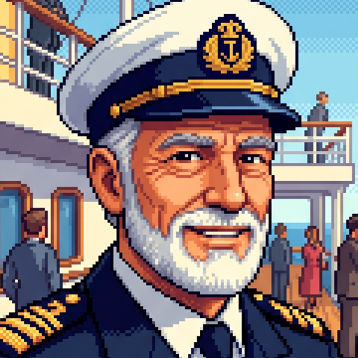

‘프로메테우스 호(Prometheus).’
당신이 사전에 그 이름을 어디선가 들어보았든, 혹은 아무것도 모른 채 그저 우연히 발걸음을 옮겼든 상관없습니다.
이것은 수천 년 동안 거센 극지의 파도가 깎아 만든 천연 해식 동굴의 장관을 관람하기 위해 기획된 초특가 크루즈 여행입니다.
다만, 항구에 도착했을 때 당신은 무언가 이상하다는 기시감에 사로잡혔을지도 모릅니다.
여행객과 선원들로 바쁘게 오고 가는 북적이는 부두였지만, 이상하게도 당신들이 탑승해야 할 거대한 크루즈선은 그 넓은 선착장 어디에서도 보이지 않았으니까요.
부두 한편에서 당신들을 맞이한 것은 여러 명이 탈 수 있는 모터보트 한 척, 그리고 승무원 명찰을 착용한 몇 사람뿐이었습니다.
거대한 크루즈에 어울리지 않는 작은 배를 마주한 당신들은 당황했을 수도, ‘이 배라도 타야 하나’ 마음속으로 망설였을 수도 있습니다.
짐을 맡아드릴 테니 조심히 올라주세요.
티켓 검사는 배 탑승 후 진행할 예정이고, 이와 같은 불편함에 대해서는 당사에서 보상하도록 하겠습니다.”
직원들의 차분하고 정중한 설명은 당신을 비교적 안심시킵니다.
당신은 그 말을 곧이곧대로 믿었을 수도, 반신반의했을 수도, 영 꺼림칙해서 끝까지 경계를 풀지 않았을 수도 있습니다.
하지만…… 승무원들이 가리킨 방향에는 분명, 번듯하고 거대한 흰 여객선이 바다 위에 우뚝 솟아 있었습니다!
그렇게 배에 탑승한 당신은, 신비로운 해식 동굴을 향한 여정을 시작합니다.
초기 탑승 과정의 불편함에 대해 사과하기 위해 연회장 단상에 직접 오른 선장은, 승객들에게 믿기 어려울 만큼 거대한 보상을 약속했습니다.
‘이번 항해 중 선내 모든 유료 서비스 전면 무료 이용, 그리고 당사 운영 크루즈 자유탑승권 지급.’
화려하게 베풀어지는 무료 웰컴 칵테일 파티와 감미로운 음악, 고급스러운 식사와 친절한 승무원들.
무엇보다 뒤뚱거리며 모두를 반겨주는 귀여운 마스코트 로봇새, ‘피봇(P-BOT)’까지.
시작이 어수선하긴 했지만, 꽤 즐거운 항해가 될 것 같습니다.
크루즈는 천천히 운행되어 세 개의 해식 동굴을 지나, 다시 처음 출항했던 항구로 돌아올 예정입니다.
바다는 잔잔하고, 바람은 선선합니다. 갑판에 선 당신의 앞에 드넓게 펼쳐진 대양. 아, 여행하기 무척 아름다운 날씨입니다!
프로메테우스는 하얀 물보라를 일으키며 첫번째 해식 동굴을 향해 나아갑니다.
우리는 모두 안정되어 있고, 행복합니다.
우리는 모두 여기 존재합니다.
신은 이곳에 존재합니다.
신은 이곳에 ■■■■■■
🚢 승선 환영의 말
신사 숙녀 여러분, 안녕하십니까! ‘초특가 해식 동굴 크루즈’에 오르신 것을 진심으로 환영합니다.
승객 여러분께서는 잊지 못할 바다 동굴의 장관을 관람하며, 여행을 함께할 소중한 인연들과 따뜻한 교류를 나누어 보시기 바랍니다.
🧭 크루즈 운항 제원
📐 프로메테우스호 측면 구역 단면도 (Side Cutaway)
웅장한 샹들리에와 나선형 원목 계단이 반겨주는 선박의 중심부입니다. 승선 후 객실 열쇠 수령, 각종 문의를 돕는 안내 데스크와 마스코트 P-bird가 상주하고 있습니다.
🛏️ 1등 객실 배치도 (Deck 2 Cabins : 201 ~ 224호)
공식 승선 명부에 따른 1등 객실(1인 1실) 배정 현황입니다.
본 함선은 세계 3대 미답의 해식 동굴 탐사라는 거대한 여정을 위해 특별 건조되었으며, 두터운 극지 빙하를 돌파하는 견고한 이중 쇄빙 장갑과 최첨단 항법 관제 시스템을 완비하고 있습니다.
우리의 항해는 곧바로 험난한 해식 동굴로 향하지 않습니다. 본격적인 제1 해식 동굴 탐사에 돌입하기 전, 온화한 남부의 에메랄드 산호초 섬 일대를 먼저 유람하며 선상 축제와 푸른 바다의 낭만을 만끽하실 예정입니다. 승객 여러분의 완벽한 휴식과 안락을 보장하고자 전원에게 1등 객실을 1인 1실로 정성껏 배정해 드렸으니, 마음 놓고 선내의 모든 특권을 누려 주십시오.
승객 여러분의 안전과 평안한 항해를 위해 저 아서 반더빌트와 프로메테우스호 전 승무원은 한순간도 긴장을 늦추지 않고 최선을 다할 것을 약속드립니다."
- 직책: 프로메테우스호 총괄 수석 셰프 (Executive Chef)
- 학력: 르 꼬르동 블루 파리 (Le Cordon Bleu Paris) 수석 졸업
- 경력: 대서양 횡단 초호화 크루즈 총괄 수석 셰프 15년 역임
- 경력: 파리 미슐랭 3스타 프렌치 오트 퀴진 레스토랑 수석 주방장
- 수상: 국제 해양 미식 페스티벌 '마스터 오브 씨푸드' 그랑프리 금상
- 전문: 극지 항해 맞춤형 영양 설계 및 프라이빗 선상 만찬 총괄
📅 2026년 9월 ~ 10월 항해 캘린더
* 공식 일정이 없는 날은 선내 자율 교류 기간입니다.| 일 (SUN) | 월 (MON) | 화 (TUE) | 수 (WED) | 목 (THU) | 금 (FRI) | 토 (SAT) |
|---|---|---|---|---|---|---|
| 9/20 |
9/21
📝 승선 명단 기록 시작 |
9/22 | 9/23 | 9/24 | 9/25 | 9/26 |
| 9/27 | 9/28 | 9/29 |
9/30
📝 승선 명단 마감 (자정) |
10/1
🎫 승선 명단 공개 & 신분 증명 |
10/2 🚢 21:00 [출항] | 10/3 |
| 10/4 21:30 [공식 항해 일정] | 10/5 | 10/6 21:30 [공식 항해 일정] | 10/7 | 10/8 21:30 [공식 항해 일정] | 10/9 21:30 [공식 항해 일정] | 10/10 21:30 [공식 항해 일정] |
| 10/11 | 10/12 | 10/13 21:30 [공식 항해 일정] | 10/14 | 10/15 21:30 [공식 항해 일정] | 10/16 | 10/17 21:30 [공식 항해 일정] |
| 10/18 | 10/19 21:30 [공식 항해 일정] | 10/20 | 10/21 21:30 [공식 항해 일정] | 10/22 | 10/23 🎬 21:30 [마지막 항해] | 10/24 |
※ 당일 진행 상황 및 총괄 사정에 따라 시작 시간이 다소 변동될 수 있습니다.
선내 조사, 소지품과 단서 확인, 방 채팅은 P-Pass에서 이용합니다. 그림과 함께 보는 P-Pass 사용 가이드 →
앱 접속 주소와 계정 안내는 총괄의 공식 공지를 확인해 주세요.
1. 스토리 진행 및 조사 타임테이블 원칙
본 커뮤니티는 긴 공백 없이 일정한 호흡을 유지하기 위해 주 3~4회(격일 간격) 밤 21:30에 스토리 및 실시간 조사 세션을 진행합니다.
- 공식 진행 시간: 지정된 일정일 밤 21:30 (진행 상황에 따라 다소 변동 가능)
- 진행 형태 [공식 항해 일정]: 달력에 표기된 날짜에 선내 안내 방송, 컷씬 지문 출력, 또는 실시간 조사 세션이 상황에 맞추어 진행됩니다.
2. 조사(탐색) 시스템 안내
• 조사는 달력에 지정된 [공식 항해 일정] 밤 21:30부터 실시간 세션으로 진행됩니다.
• 조사 세션이 시작되면 선내의 특정 구역이 개방되며, 승객 여러분은 해당 구역을 탐색하여 선내에 흩어진 기록과 단서를 수색하게 됩니다.
• 실시간 세션에 부득이하게 불참하더라도 획득된 단서는 기록되므로, 이후 P-Pass의 [기록]에서 공유된 주요 정보를 확인하거나 다른 러너들과 대화하며 추리에 참여하실 수 있습니다.
3. P-Pass 가이드
- 선내를 조사하고, 발견한 아이템과 주요 정보를 확인할 수 있습니다.
- 같은 방의 승객과 대화하거나 객실 책상에 쪽지와 아이템을 남길 수 있습니다.
- 롤플레잉 중 랜덤한 선택이 필요할 때는 미니게임을 활용해 주세요.
4. [특이 사항: 심연의 속삭임]
"바다를 너무 오래 들여다보지 마십시오."
• 출항 이후 항해가 지속됨에 따라, 일부 승객에게서 설명할 수 없는 이상 감각, 불안, 혹은 '무언가에 스며드는 듯한' 변화가 감지될 수 있습니다.
• 당신이 목격하는 것이 과연 온전한 현실인지, 아니면 차가운 안개가 빚어낸 허상인지 끊임없이 의심하십시오.
• 승객 여러분의 정신적·심리적 상태는 P-Pass를 통해 은밀하게 측정 및 기록됩니다. 이 징후가 임계점에 도달했을 때,
1. 기본 안내 및 수위 등급
본 커뮤니티는 밀실 고립, 조난, 시신의 변형, 갈등, 살인 및 유혈 묘사를 포함하고 있습니다.
작중 전개에 따라 캐릭터가 불가해한 상황이나 상해 사건에 휘말릴 수 있습니다.
총괄진은 작중 등장하는 잔혹 행위 및 비도덕적 설정을 일절 옹호하지 않습니다. 현실과 가상을 명확히 구분해 주시기 바랍니다.
2. 작중 표기 언어 및 텍스트 안내
본 커뮤니티에서 제공되는 모든 의사소통, 선내 안내 방송, 문서 및 단서는 기본적으로 한글 또는 영어를 매개체로 작동합니다.
3. 직장인 및 성인 러너 배려 규칙
러너 대다수의 생업(야근, 출장, 회식 등) 일정을 적극 배려합니다. 실시간 접속에 대한 강제나 압박은 일절 없습니다.
조사는 지정된 일정일 밤에 실시간 세션으로 진행됩니다. 실시간 참가가 어렵더라도 획득된 모든 단서는 기록되므로, 이후 러너 간 교류를 통해 얼마든지 내용을 확인하고 추리에 참여하실 수 있습니다.
무통보 잠수가 3일 이상 지속될 경우, 캐릭터의 개별 엔딩을 포함한 하차를 진행해 드립니다. 부득이하게 접속이 어려우실 경우 총괄계로 미리 가볍게 언질 부탁드립니다.
4. 플레이 매너 및 소통 안내
캐릭터 간의 불화, 의심, 대립이 오너 간의 갈등으로 번지지 않도록 유의해 주세요. 총괄계 및 공용 채널에서의 과도한 오너 트윗(메타 발언)은 몰입을 해칠 수 있으므로 지양해 주시기 바랍니다.
캐릭터 간의 1:1 대화 및 비밀 소통은 마스토돈의 쪽지(다이렉트 메시지) 기능을 활용해 주시기 바라며, 상황 파악 및 원활한 스토리 조율을 위해 반드시 총괄계를 수신인에 포함(함께 멘션)하여 대화해 주시길 부탁드립니다.
러너분들 모두가 서로 알고 지내는 사이이자, 각자의 일상과 업무로 바쁜 분들입니다. 엄격하고 딱딱한 규칙이나 페널티보다는 서로의 입장과 상황을 최대한 배려하고 존중하며 함께 즐거운 커뮤를 만들어가고 싶습니다. 부담 없이 편안한 마음으로 재미있게 뛰어주셨으면 좋겠습니다!